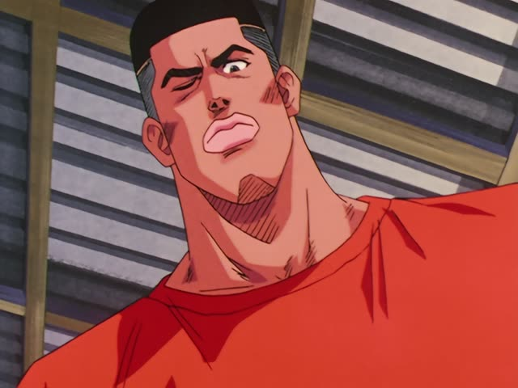
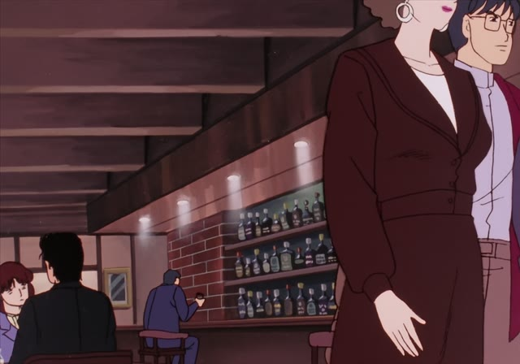

へ

Shirokuma Cafe · Episode 34
お好きな席へどうぞ。
"Please go to any seat you like."
へ (said "e") marks the direction something moves in: toward. It goes right after a place or a direction word: 席 + へ.
On this card, you're pointed toward any seat you like. It answers "Go which way?": to a seat. どうぞ ("please") keeps it polite.
Same in polite and casual speech. With 行く, 来る, 帰る you can use へ or に: へ leans on the direction, に on the spot you land.

How do you like Wednesday? · Episode 1
深夜バス、オレンジライナー、東京から西へ約900キロ。
"The overnight bus, the Orange Liner, [heading] about 900 km west from Tokyo."
On this card, there's no verb at all, and へ still tells you the bus is heading somewhere: 西へ, west.
Quick Examples
Leaving the office, a coworker asks where you're off to.
駅へ行きます。
"I'm heading to the station."
駅に行きます means the same thing. With 行く, either one is fine.
PoliteWatching birds fly over in autumn.
鳥が南へ飛んでいく。
"The birds are flying south."
No destination, just a direction. That's へ's home turf.
CasualIt's late, and the party is winding down.
そろそろ家へ帰ろう。
"Let's head home soon."
家へ帰る: going back toward home. 家に帰ろう works too.
CasualYou thought you were meeting at the station, but your friend texts "I'll come to your place tonight."
ここへ？
"[You're coming] here?"
The verb (来るの) is dropped because it's obvious. へ alone says "coming this way". Just ここ？ could mean anything.
CasualWith and without
京都に着いた。
"I arrived in Kyoto." The point is that you're there now.
京都へ向かった。
"I headed for Kyoto." The point is the direction. You might still be on the way.
Examples from Media

YouTube · video
前回は、アウトポストからちょっと南へ行った、海沿いのところに、家を建てたんですよね。
"Last time, I built a house by the sea, a little way south of the outpost."
南へ行った: "went south". A direction word, so へ fits naturally.

NHK News Web Easy · article
雪が降る所へ車で行くときは、スタッドレスタイヤなどの冬のタイヤとチェーンを準備して、気をつけて運転してください。
"When you drive somewhere it snows, get winter tyres and chains ready and drive carefully."
雪が降る所 is "a place where it snows", and へ points the trip there.
Kekkon Dekinai Otoko · Episode 2
こちらへ どうぞ。
"This way, please."
Staff showing a customer to a seat.

How do you like Wednesday? · Episode 1
北海道とか、ローカル番組って、"どこかへ行こう"っていう案内、いろいろ…まあ国内であったり、海外であったり、観光地。
"Local shows, like in Hokkaido, have all kinds of 'let's go somewhere' guides... in Japan, abroad, tourist spots."
どこかへ行こう: "let's go somewhere". No set place, just going off somewhere.

Slam Dunk · Episode 5
どこへ行く。
"Where are you going?"
Dungeon Meshi · Episode 17
地上へ戻ろう。
"Let's go back to the surface."

Oishinbo · Episode 64
さあ、他の店へ行こう。
"Come on, let's go to another place."

Shirokuma Cafe · Episode 7
海へドライブだよ！
"A drive to the sea!"
Heading towards the sea.
Further Reading
A Dictionary of Basic Japanese Grammar
Entry "e" (へ) · pp. 116–117
Tae Kim's Guide to Japanese Grammar
Particles used with verbs · The directional 「へ」 particle